5 MARKERING LOOP VAN DE VAARGEUL
5.1 Ligging van de vaargeul
Deze tekens zijn geplaatst op die oever van een rivier, waarlangs (het diepste gedeelte van) de vaargeul loopt.
5.1.1. Rechter oever
dagmerk: | vierkant rood teken met horizontale witte band aan boven- en onderzijde, geplaatst op de vlakke zijde | 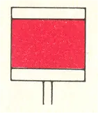 |
licht:1 | rood onderbroken licht, met verschillende perioden van de even en de oneven genummerde lichten | 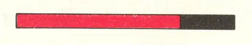 |
kenteken:1 | opeenvolgende nummering, onafhankelijk van de kleur. | b.v. 1, 2, 4, etc. |
1 indien aanwezig
5.1.2. Linker oever
dagmerk: | vierkant teken, groen boven en wit onder, geplaatst op de punt | 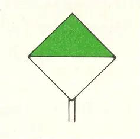 |
licht:1 | groen onderbroken licht, met verschillende perioden van de even en de oneven genummerde lichten | 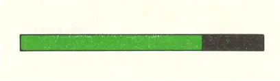 |
kenteken:1 | opeenvolgende nummering, onafhankelijk van de kleur. | b.v. 3, 5, 6, etc. |
1 indien aanwezig
5.2. Overgangen
De punten waar de vaargeul van de ene oever naar de andere overgaat kunnen aanvullend als volgt zijn gemarkeerd:
5.2.1. Rechter oever
dagmerk: | vierkant geel teken met verticale zwarte balk in het midden, geplaatst op de vlakke zijde | 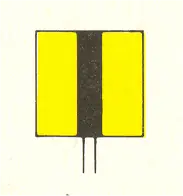 |
licht:1 | geel onderbroken licht | 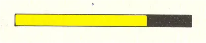 |
kenteken:1 | nummering aansluitend aan die van 5.1.1 en 5.1.2 | b.v. 8 |
1 indien aanwezig
5.2.2. Linker oever
dagmerk: | vierkant geel teken met verticale diagonale zwarte balk, geplaatst op de punt | 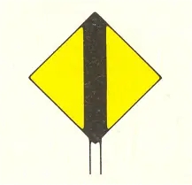 |
licht:1 | geel onderbroken licht | 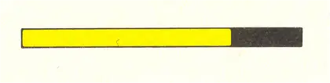 |
kenteken:1 | nummering aansluitend aan die van 5.1.1 en 5.1.2 | b.v. 7 |
1 indien aanwezig
5.2.3 Geleidelijnen
Ter markering van een overgang over langere afstand kan op dezelfde oever een stel van de onder 5.2.1 of 5.2.2 genoemde tekens zijn geplaatst, waarvan het achterste teken hoger is dan het voorste. Deze tekens inéén (verticaal boven elkaar) gezien geven de as van de overgang aan. | 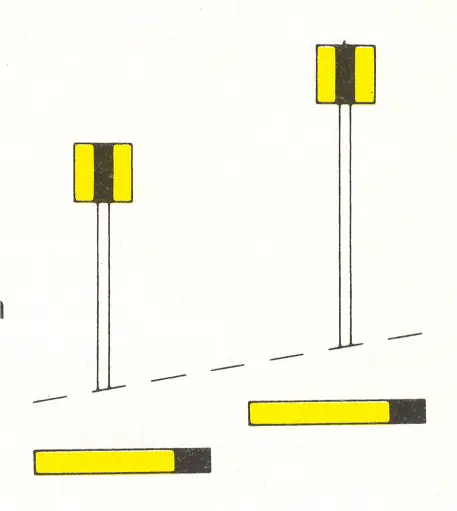 |
Opmerking
De hiervoor genoemde lichten kunnen in plaats van de dagmerken voorkomen.
5.3 Lichtenlijnen (geleidelichten)
Volgens hetzelfde principe als onder 5.2.3 genoemd geven geleidelichten, inéén gezien, de as van een aanlooproute vanuit zee of een meer, dan wel het diepste gedeelte van een vaargeul aan. Lichtenlijnen worden toegepast in gevallen waar andere vaarwatermarkering onvoldoende leiding geeft of ontbreekt. De lichten zijn doorgaans synchroon brandende periodelichten van dezelfde kleur; het hoge licht kan evenwel een vast licht zijn. De kleur is meestal wit; ter betere onderscheiding (achtergrondverlichting, meerdere lichtenlijnen naast elkaar) kunnen ook andere kleuren worden toegepast. | 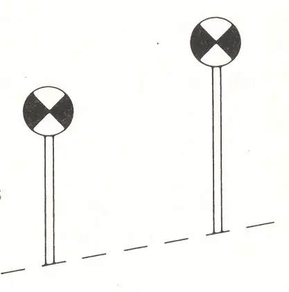 |
5.4 Sectorlichten
Deze dienen eveneens als geleidelichten. Bij een sectorlicht is de lichtbundel verdeeld in één of meer witte en rode en/of groene sectoren. In het algemeen geeft een witte sector de ligging van het vaarwater aan ten opzichte van ondiepten en/of oevers, die gedekt worden door de naastliggende groene of rode sectoren. Aangezien de aldus gemarkeerde gevaren meestal op verschillende afstanden van het licht zijn gelegen, is plaatselijke bekendheid of het raadplegen van een kaart onontbeerlijk voor de juiste interpretatie van dergelijke lichten. | 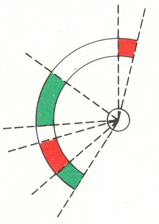 |